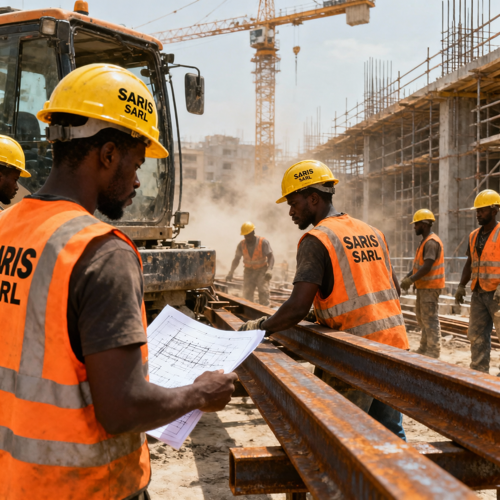
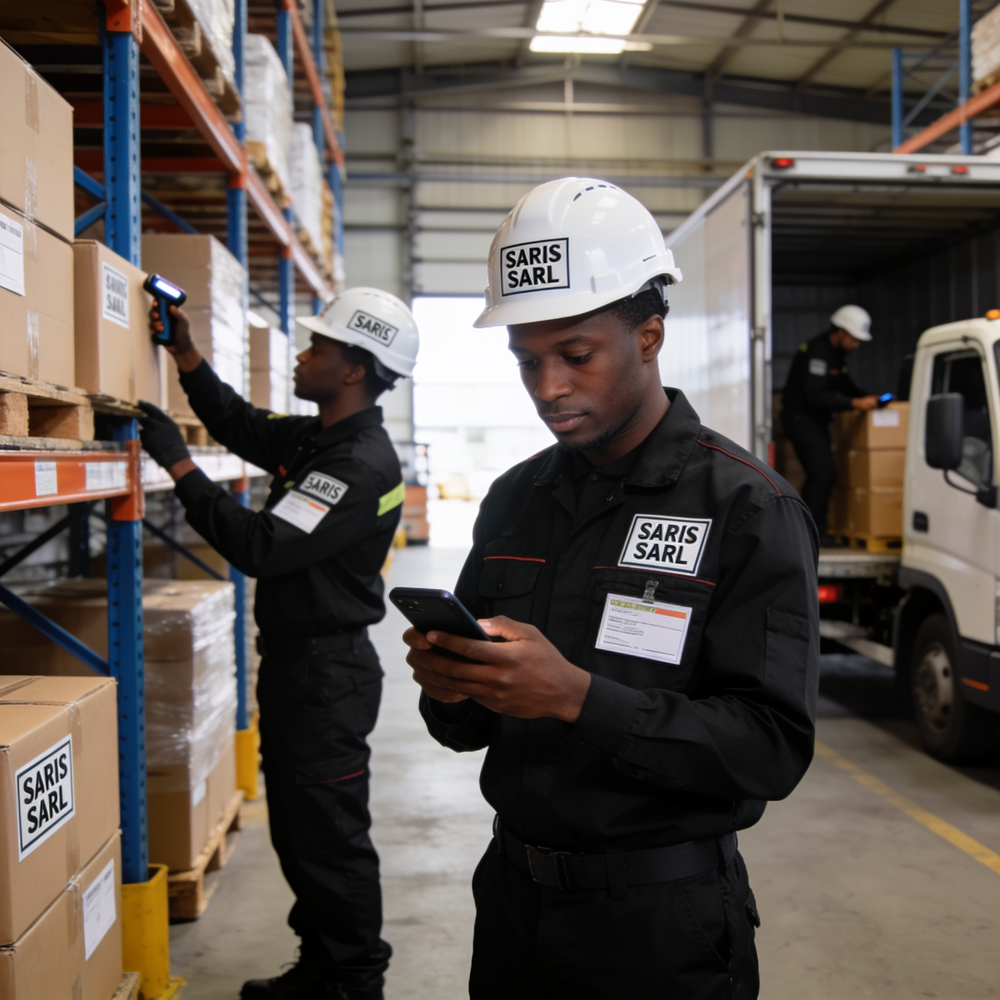
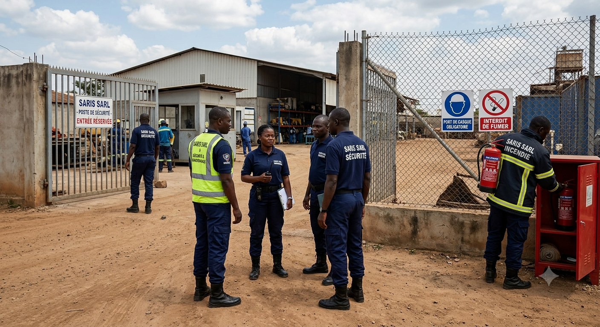
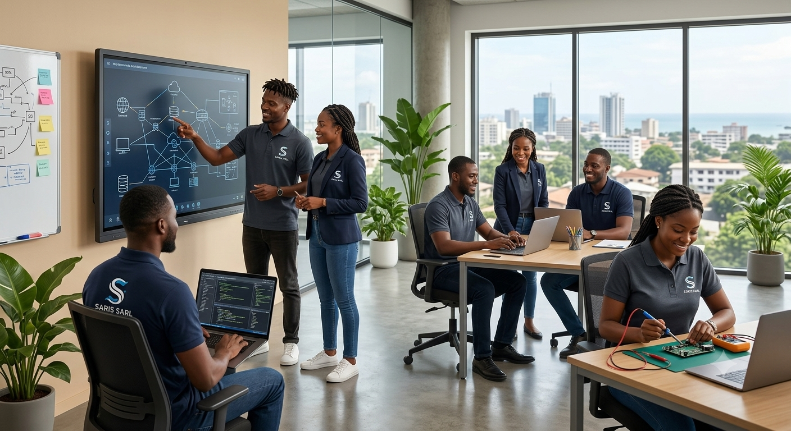
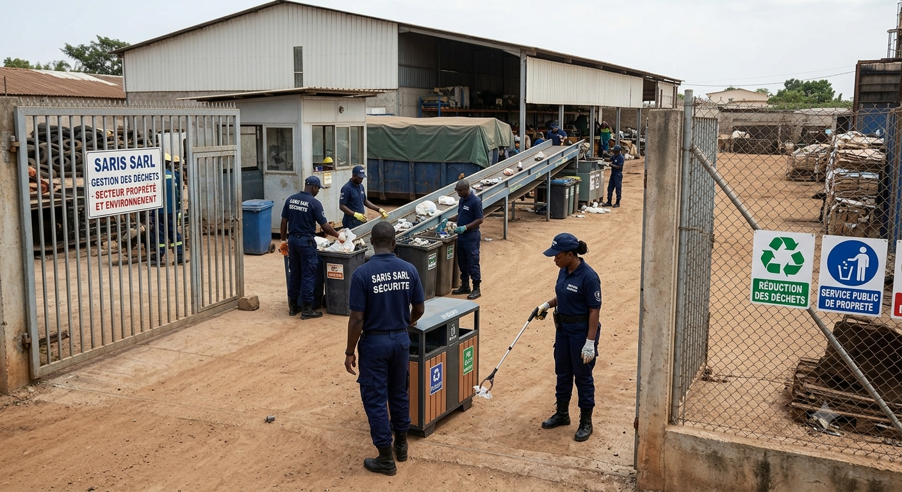

Découvrez nos domaines d'expertise au service de votre réussite
SARIS SARL déploie une expertise multi-sectorielle à travers six pôles d'activités complémentaires, offrant des solutions complètes et sur-mesure pour chaque besoin professionnel.
Notre pôle BTP prend en charge l'intégralité de vos projets de construction, du forage aux travaux de génie civil, en garantissant qualité, respect des délais et conformité normative.

Notre pôle logistique assure la gestion fluide de vos chaînes d'approvisionnement, du transport de marchandises au dédouanement, pour une livraison fiable et sécurisée.

Notre pôle maintenance garantit la performance et la pérennité de vos équipements industriels grâce à des interventions préventives et curatives de haute qualité.
Notre pôle sécurité et facility management veille à la protection de vos sites et à la maintenance de vos infrastructures dans les meilleures conditions.

Notre pôle digital vous accompagne dans votre transformation numérique avec des solutions informatiques innovantes, des infrastructures réseau performantes et des outils d'intelligence artificielle.

Notre pôle agriculture et ressources humaines soutient le développement agricole et assure la gestion efficace de vos ressources humaines et de vos approvisionnements.

Contactez-nous pour discuter de votre projet. Nos experts sont à votre écoute pour vous proposer la solution la plus adaptée.
Nous Contacter